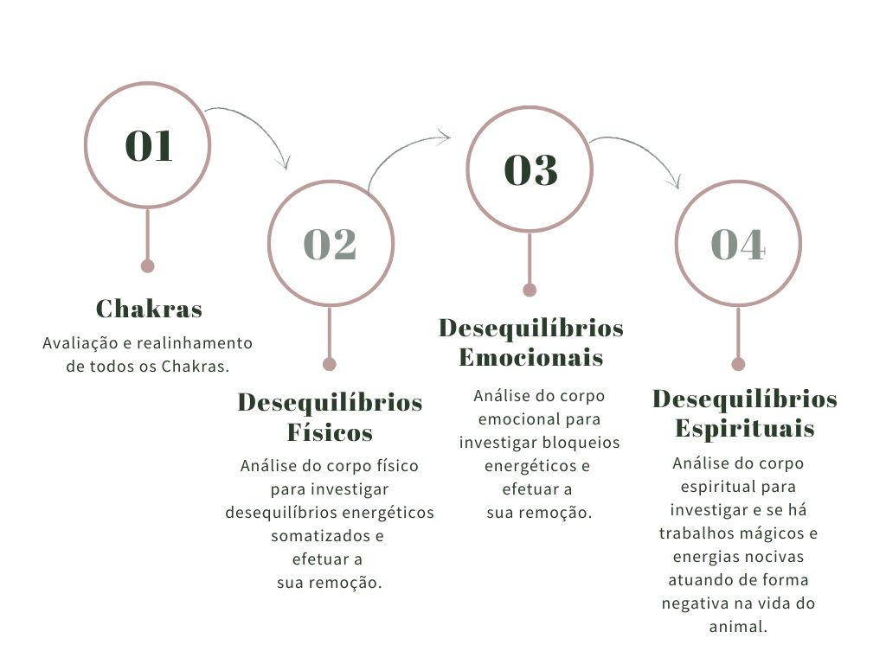

MAP
A MAP é um tratamento energético para PET com o objetivo de identificar e ressignificar os bloqueios gerados no corpo físico, emocional e espiritual do animal.
Esses bloqueios afetam de forma negativa a rotina alimentar, o humor, o sono e traz desequilíbrios gastrointestinais.
O tratamento pode ser feito para todas as espécies de animais de estimação.
Indicações
- Alergias
- Vômitos
- Diarréias
- Excesso de raiva/ nervosismo
- Apatia
- Falta de apetite
Como funciona a sessão?
A sessão é realizada à distância, com data e horário pré-agendado, tendo duração de aproximadamente 1 hora.
No dia da sessão, o animal deve ficar em casa e não receber estímulos externos, como sair para banho e tosa.
A técnica utilizada é a ativação de uma mesa multidimensional e durante a sessão serão realizadas:
